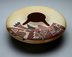
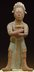

Earthenware
Earthen ware is light and porous, and a pinkish color when fired.
It is fired at a low kiln temperature, a maximum of 2,000 degrees Fahrenheit.
Earthenware glazes are often shiny.
Examples of earthenware
 |
 |
 |
|
|  |  |
 |
|
Stoneware
Stoneware is heavy and dense, and a brownish gray color when fired.
It is fired at hotter kiln temperatures than earthenware, a maximum of 2,370 degrees Fahrenheit.
Stoneware glazes are often dull or matte.
Examples of stoneware

Porcelain
Porcelain is lightweight, pure white, thin and translucent (lets light through, but is not transparent).
It is fired at the same kiln temperatures as stoneware, or at hotter kiln temperatures.
Porcelain can only be made using a special, pure clay and glaze.
Examples of porcelain